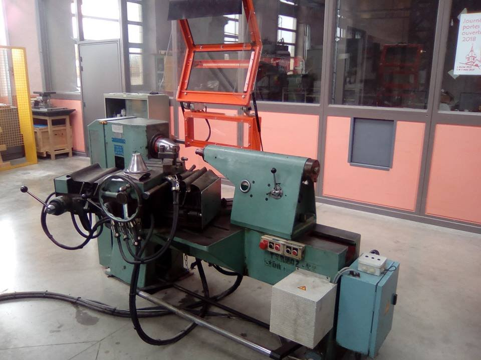
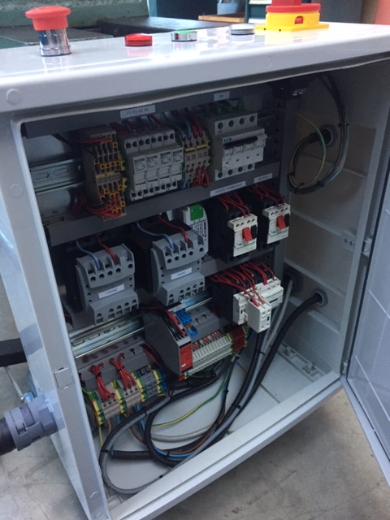
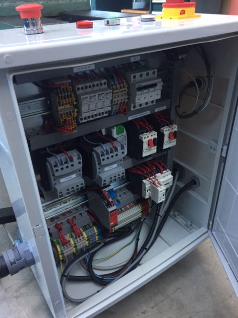
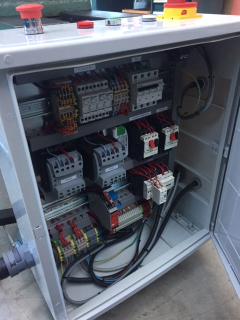

Gallery


 

This is what the flowforming machine looked like before we worked on it
This is what the machine lokked like right before we finished the work and attached the electrical cabinet to the side

This is a before/after comparison of what the inside of the electrical cabinet looks like, thanks to the electrical maintenance technicians that helped us